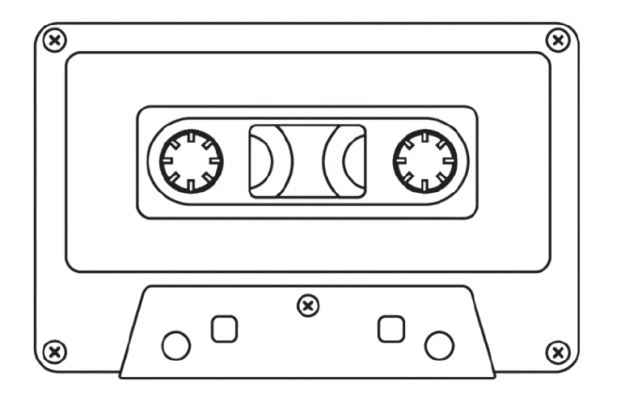

ВЫПУСК 01 · 55 МИН
Что рассказали рассекреченные документы ЦРУ в 2023 году
Убийство Кеннеди: новые свидетели
Что рассказали рассекреченные документы ЦРУ в 2023 году
Нераскрытое убийство: дело 1987 года
Спустя 35 лет следователи получили новую улику
Исчезновение Бориса Немцова
Что стоит за официальной версией следствия
Холодное дело становится горячим
Как ДНК-база помогла раскрыть дело 1996 года
Ошибка прокурора
История человека, осуждённого за чужое преступление
Дело не закрыто: итоги сезона
Пять дел, которые мы продолжаем отслеживать